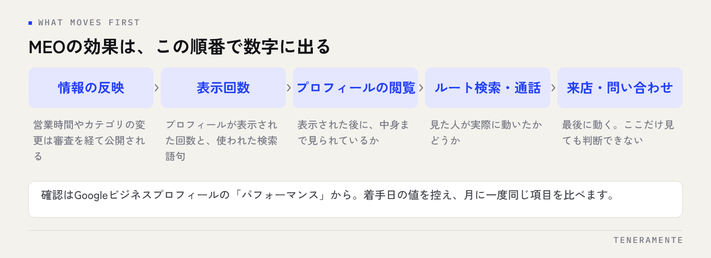

情報を整え、写真を足し、投稿も始めた。それでも順位が動かず、これを続けていいのか分からなくなる。MEO対策でいちばん多い相談がこれです。効果が出るまでの期間は一律には決まりませんが、何がどの順番で動くかは決まっています。その順番を知っていれば、途中でやめる判断を誤らずに済みます。
📌 この記事の結論
MEO対策の効果は、順位より先に「表示回数」「ルート検索」「通話」といった数字に現れます。見るべきは着手からの経過日数ではなく、先に動く数字が動いているかどうかです。ここが止まっているなら期間の問題ではありません。
01MEO対策の効果が出るまでの期間が、一律に答えられない理由
「MEOはいつから効果が出ますか」という質問に、正直に答えるなら「店舗によって違います」になります。これは逃げの回答ではなく、順位を決める要素が店舗ごとに違うためです。
Googleマップの表示順に影響するのは、検索した人との距離、検索語との関連性、そして店舗情報の充実度や知名度です。このうち距離は動かせません。同じ作業をしても、競合が3軒のエリアと数十軒あるエリアでは、動き方がまったく違います。
さらに、情報を更新してもすぐには反映されません。営業時間やカテゴリの変更は審査を経てから公開されるため、編集した当日に結果を見ても何も分かりません。数日単位のずれがあることを前提に見てください。
MEO対策そのものの全体像はMEO対策の完全ガイドにまとめています。この記事では、着手した後の「見方」に絞って書きます。
02順位より先に動く数字がある
効果を順位だけで測ろうとすると、動いていないように見えます。実際には、順位が変わる前に別の数字が先に動きます。

Googleビジネスプロフィールの「パフォーマンス」では、プロフィールが表示された回数、検索に使われた語句、ルート検索、通話、ウェブサイトのクリックを確認できます。順位は日によっても検索する場所によっても変わりますが、これらの数字は積み上がるので、傾向として読めます。
見る順番は、表示回数 → プロフィールの閲覧 → ルート検索や通話 → 来店・問い合わせです。前の数字が動いていないのに、後ろの数字だけが動くことはありません。どこで止まっているかが分かれば、次に手を入れる場所も決まります。
03進み方は、おおまかに3つの段階に分かれる
期間を日数で区切るより、段階で捉えるほうが実態に合います。
第1段階は、土台を整える時期です。カテゴリ、営業時間、電話番号、サービス内容、写真を埋めていきます。ここでは順位はほとんど動きませんが、表示される検索語句が増え始めることがあります。埋めるべき欄が残っているうちは、次の段階に進んでも効果は見えません。
第2段階は、反応が出始める時期です。表示回数やルート検索が、以前より上振れする日が出てきます。まだ安定しませんが、特定の検索語句で表示されるようになったなら、方向は合っています。
第3段階は、順位として定着する時期です。狙っていた検索語で継続的に上位に並び、来店や電話の件数が変わってきます。ここまで来ると、日々の更新は維持のための作業に変わります。
競合の多いエリアや、始めたばかりのプロフィールほど、第2段階に入るまでが長くなります。逆に、情報が空欄だらけだった店舗は、埋めるだけで第2段階に入ることがあります。
04期間を左右する4つの条件
同じ手間をかけても差が出るのは、次の条件が違うためです。自店がどちらに近いかを確認してください。
| 条件 | 早く動きやすい店舗 | 時間がかかる店舗 |
|---|---|---|
| プロフィールの状態 | 空欄が多く、埋める余地が大きい | すでに一通り埋まっている |
| 競合の数 | 同業が少ない、または情報が古い | 同業が多く、各店が更新している |
| 口コミの蓄積 | 継続的に増えている | ほとんど付いていない、または止まっている |
| 検索語の広さ | 地域名＋業種など具体的な語 | 業種名だけの広い語 |
この表で右側が多いなら、期間は長くなります。それは失敗ではなく、条件の問題です。狙う検索語を具体的なものに変えるだけで、見える景色が変わることは珍しくありません。
最初の記録を残しておく
着手した日に、表示回数・ルート検索・通話・口コミ件数を書き留めてください。比較対象がないと、後から「増えた気がする」で終わってしまいます。月に一度、同じ項目を同じ場所に記録するだけで十分です。
05途中でやめてしまう人が見ている数字
続かなくなる理由は、だいたい見ている数字が順位だけ、というところにあります。
自分のスマートフォンで店名や業種を検索し、何番目に出るかを確かめる。これはいちばん手軽な確認方法ですが、検索した場所、ログイン状態、検索履歴によって結果が変わります。店舗の前で検索すれば上に出ますし、自分の店を何度も見ていれば表示されやすくなることもあります。
日によって順位が上下するのも通常の動きです。一度下がっただけで作業を止めてしまうと、せっかく積み上げた情報の更新が途切れ、かえって評価が落ち着かなくなります。
順位は結果であって、作業の対象ではありません。手を入れられるのは、情報の正確さと、更新の頻度と、口コミへの向き合い方だけです。
順位が実際に落ちたときの確認手順はGoogleマップの順位が下がったときの確認で扱っています。
06「効果が無い」のか「見方が違う」のかを切り分ける
続けるか見直すかを決める前に、次の3点を確認してください。ここを飛ばして判断すると、うまくいっていた施策まで止めることになります。
- 表示された検索語句を見る。狙っていた語で表示されているか。想定と違う語ばかりなら、狙う語かプロフィールの書き方を変えます
- 表示回数と行動の比率を見る。表示は増えているのにルート検索や通話が増えないなら、順位ではなく写真・口コミ・営業時間など「見た後の判断材料」の問題です
- 競合のプロフィールを見る。上位の店舗が写真も口コミも更新し続けているなら、期間ではなく作業量の差です
3つとも問題が無いのに数字が動かない場合は、検索する人の総数がそもそも少ない語を狙っている可能性があります。その場合は、対象の語を広げるか、別の集客経路と組み合わせる判断になります。
短期間での順位保証には注意
「◯日で1位」といった保証は、順位が検索する場所や状況で変わる以上、成立しにくいものです。契約を検討する際は、何を作業として行うのかと、報告される数字が何かを先に確認してください。
07見直しのタイミングと、手を止めないほうがいい作業
見直しは、感覚ではなく周期で行います。月に一度、記録した数字を並べて、前の月と比べる。これを繰り返し、数か月ぶんが並んだ時点で、狙う検索語や写真の方針を変えるかを判断します。週ごとに方針を変えると、何が効いたのか分からなくなります。
一方で、見直しの結論が出るまで止めないほうがいい作業があります。
- 営業時間や臨時休業の反映：実際と違う情報は、来店した人の体験を直接損ないます
- 口コミへの返信：返信の有無は検索した人にも見えています
- 写真の追加：内観・外観・商品やサービスの現物。古い写真だけの状態は避けます
- 投稿の更新：頻度より、情報が古くないことのほうが大切です
これらは順位のためというより、見つけてもらった後に選ばれるための作業です。順位が動くまでの期間こそ、ここを整える時間に充てると、第3段階に入ったときの成果が変わります。
MEO対策を始めて最初に確認すべき数字はどれですか？
順位が上がらないまま数か月続けても意味はありますか？
自分で検索して順位を確認する方法ではだめですか？
08まとめ：期間ではなく、動いている数字で判断する
MEO対策の効果が出るまでの期間は、プロフィールの状態、競合の数、口コミの蓄積、狙う検索語の広さで変わります。だからこそ、経過日数で判断せず、表示回数から順に、先に動く数字が動いているかどうかを見てください。そこが動いていれば方向は合っています。止まっているなら、待つのではなく中身を変える段階です。
記録を月に一度残し、営業時間・口コミ返信・写真の更新だけは止めない。これだけでも、判断の材料は十分にたまります。
TENERAMENTEでは、何をどの順番で整えるかの設計から、数字の見方の共有までを含めてMEO対策をお引き受けしています。すでに始めていて手応えが分からないという段階でも構いませんので、お問い合わせからご相談ください。